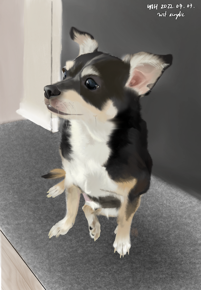
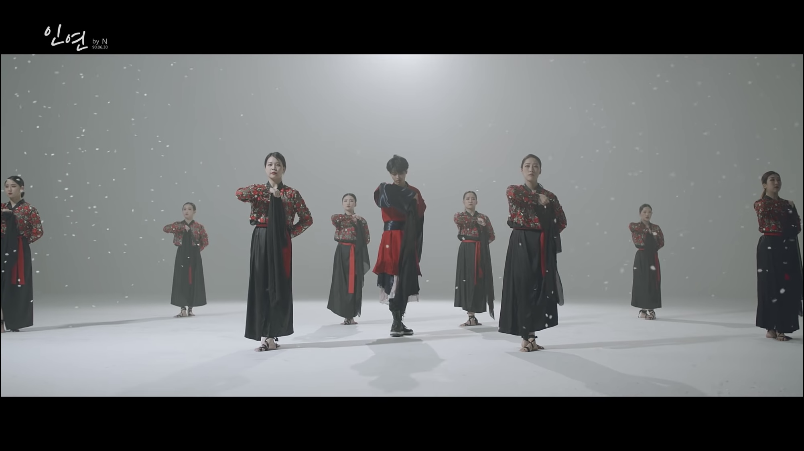

How can we democratize tech/AI ethics in the form of an ongoing whole-of-society discourse?
YOU JEEN (유진) is the founder of think space and podcast series Saram in the World and a consultant with the Kigumi Group focusing on the intersection of technology, ethics, and regulatory mechanisms (e.g., stakeholder approaches to AI ethics in East Asia). During her Fulbright fellowship in South Korea, she researched the Moon administration’s multi-stakeholder policymaking process for 4IR and AI ethics at KAIST.
She holds a B.A. in Computer Science and Philosophy from Smith College, where she completed an honors thesis on causality and machine learning, evaluating how current statistical practices are used to implement explainable AI. Over the years, she was also accepted to multiple conferences, including the international ACM FAccT Conference (see paper) and the ETHICOMP computer ethics conference series. She studied abroad at the University of Oxford in Spring 2019, centering her studies on theoretical AI and philosophy of cognitive science.
Born in Seoul but raised in the U.S., You Jeen is proud of her Korean-American identity and, with this identity serving as the foundation, seeks to further cross-national communication and collaboration in technology ethics and policy. In her spare time, she enjoys watching movies, PC gaming, digital painting, and relaxing with her family and chihuahua.
Left & Right
After completing her Fulbright fellowship in Korea, You Jeen decided to work on making a think space for cross-national discussions surrounding tech ethics and policy. She envisions this platform to be a kind of Habermasian public sphere, calling for the involvement and participation of all relevant stakeholders.
You Jeen believes engaging with the creative arts opens the door to a zen space while also stimulating originality and open-minded thinking. On the right is a portrait of her life-long friend.
Conference Papers

South Korean Public Value Coproduction Towards 'AI for Humanity': A Synergy of Sociocultural Norms and Multistakeholder Deliberation in Bridging the Design and Implementation of National AI Ethics Guidelines
Accepted to and presented at 2022 ACM FAccT Conference (Seoul, South Korea).
In 2022 ACM Conference on Fairness, Accountability, and Transparency (FAccT ’22)

For or Against Progress?: Institutional Agency in a Time of Technological Exceptionalism
Accepted to ETHICOMP 2020 (Spain).
In 18th International Conference on the Ethical and Social Impacts of ICT: Proceedings of the ETHICOMP 2020. Paradigm Shifts in ICT Ethics (p. 425).

The Misguided Conflation of Epistemic Ontology and Epistemic Onticism in AGI Research
Presented at ETHICOMP 2018 (Poland)

David Hume and Dogen Zenji: Personhood, Self, and Identity as Evolutionary Impermanence
Presented at 2018 UEHIRO Graduate Philosophy Conference "Cross-Currents: Persons and Selves" (Hawaii)
& 2018 Five College Philosophy Conference (Northampton, MA)

"Surrender" as a Pervasive, Unifying Theme in Philosophy of Religion
Presented at 2017 Mid-Hudson Undergraduate Philosophy Conference (New York)
Best of Korean Performance

N (엔) - Fate (인연)
VIXX's N conveys a sentimental expression of longing with a mix of contemporary and Korean traditional elements in dance and aesthetic.
Sarah Chang (장영주) - Zigeunerweisen op. 20
Sarah Chang's world-renowned technique, especially her rich vibrato, and powerful expressiveness do not disappoint in one of her most watched performances.
Kang Hyungho (강형호) - Phantom of the Opera
Forestella's Kang Hyungho showcases his opera style vocals, singing in both female and male keys.

Hyunjin (현진) - Motley Crew Remix
SKZ's Hyunjin delivers a fierce combination of intense K-pop choreography and modern and hip-hop/urban dance (a heavy focus on krumping).